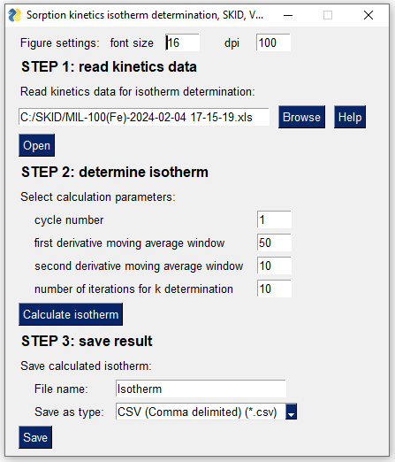

The SKID method enables the rapid determination of experimental sorption isotherms from non-equilibrium gravimetric sorption kinetics data. This approach is ca. 10 times faster than conventional equilibrium-based isotherm determination methods and has potential for high-throughput testing of sorbent materials.
The SKID method has been published in the Chem peer-reviewed journal (DOI:10.1016/j.chempr.2024.01.011). The method has been demonstrated to work for water and C8 aromatics vapours, as well as for CO2 gas. The code used for data analysis and visualizations in the manuscript is available in the Manuscript folder of this GitHub repository. Additionally, corresponding data is availalbe at Zenodo repository: https://doi.org/10.5281/zenodo.7600754.
To facilitate the adoption of the SKID method, we have developed an easy-to-use Graphical User Interface (GUI) for SKID data analysis software.
There are two options for running SKID GUI data analysis software: using the executable or running the Python code.
Download and run SKID_GUI.exe executable from latest releases .
The executable is currently supported for Windows 10.
Download and run SKID_GUI.py code.
We provide a step-by-step tutorial on the rapid determination of water vapor isotherms using sorption on MIL-100(Fe) material as an example. Files required for this tutorial are available in Examples folder of this GitHub repository.
Collect gravimetric humidity swing sorption data: kinetics in full adsorption and desorption cycle is required.
For the MIL-100(Fe) example, we collected experimental kinetics data using the DVS Adventure instrument. The MIL-100(Fe)_kinetics.mtd DVS Adventure method file was used for the experiment: 0-60 % relative humidity swing with dm/dt = 0.05 %/min as equilibration criterion.
SKID GUI supports two options for kinetics data files:
.xls or .xlsx) from DVS Adventure and DVS Intrinsic instruments (Surface Measurement Systems). Only DVS Data tab is required for SKID method..csv file format. The file should contain following heading: Time[min],Mass[mg],Temperature[degreeC],RH_target[%],RH_measured[%]Run the SKID_GUI software. The Graphical User Interface (GUI) will load, as shown in the figure below.
Note that initial loading of the interface might be slow, please be patient

Select the MIL-100(Fe)-2024-02-04 17-15-19.xls or MIL-100(Fe)-2024-02-04 17-15-19.csv file by pressing the Browse button and then press the Open
button. The software will read the file and plot the kinetics data in a
new window, as illustrated below. The software will automatically
identify the potential humidity swing adsorption/desorption cycle
suitable for SKID calculations (cycle number 1).
Select the corresponding cycle number plotted in the previous step (cycle number 1). Determine the sorption isotherm by pressing the Calculate isotherm button. The calculation results will open in a new window, as shown below.
Save the isotherm calculation results in a file by selecting file name and file type (CSV or AIF [Adsorption Isotherm File]) and then pressing the Save button.
If you find the SKID method useful, please consider citing the related publication:
Bezrukov, A. A.; O’Hearn, D. J.; Gascón-Pérez, V.; Matos, C. R. M. O.; Koupepidou, K.; Darwish, S.; Sanda, S.; Kumar, N.; Li, X.; Shivanna, M.; Zaworotko, M. J.; Rapid Determination of Experimental Sorption Isotherms from Non-Equilibrium Sorption Kinetic Data. Chem, 2024 DOI:10.1016/j.chempr.2024.01.011